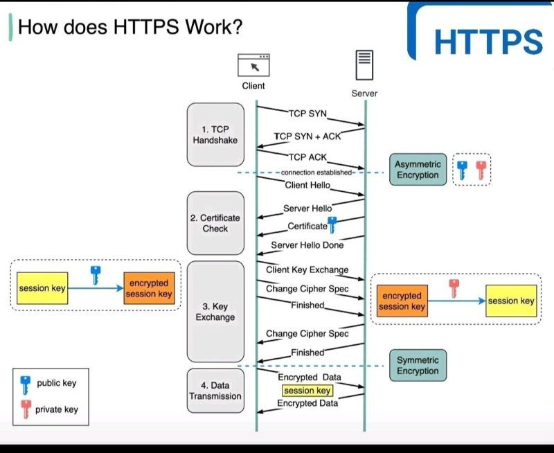

Security in System Design
Treating security as a first-class architectural dimension — identity, secrets, encryption, blast-radius containment, and the threat models that drive design decisions.
In this lesson
- Security as a First-Class Dimension
- Authentication vs Authorization
- OAuth2, OIDC, and JWT
- mTLS and Zero-Trust Networking
- Encryption: In Transit and At Rest
- Secrets Management
- Defense in Depth and Abuse Protection
- Threat Modeling and OWASP
- PII Handling and Data Minimization
- Principal-level mastery check
Security as a First-Class Dimension
Junior designs treat security as a checklist bolted on at the end: "add auth, use HTTPS, done." Principal designs treat it as a dimension that sits alongside latency, availability, and cost — one that shapes service boundaries, data flows, and failure modes. The reason is structural: security is an emergent property of the whole system, not a feature of any single component. A perfectly hardened auth service does nothing if a downstream service trusts a forged internal header.
The mental model that scales is blast-radius thinking. For every credential, every trust boundary, every data store, ask: if this single thing is compromised, what is the worst an attacker can do, and how do we contain it? This is the same instinct as designing for partial failure in distributed systems — you assume components will be breached the way you assume nodes will crash, and you bound the damage.
Three principles recur throughout this lesson:
- Least privilege — every identity (human or service) gets the minimum access needed, scoped and time-bounded.
- Defense in depth — no single control is the only thing standing between an attacker and the crown jewels.
- Fail closed — when a security control errors or times out, deny rather than allow. (Contrast with availability controls, which often fail open.)
Authentication vs Authorization
These are constantly conflated and the distinction is load-bearing in any design discussion.
- Authentication (AuthN) — who are you? Verifying identity. Output: a proven principal (user 12345, service
billing-svc). - Authorization (AuthZ) — what are you allowed to do? Evaluating whether the proven principal may perform an action on a resource. Output: allow/deny.
The architectural decision is where AuthZ lives. Three patterns:
| Model | How it works | Trade-off |
|---|---|---|
| RBAC | Roles bundle permissions; users get roles. | Simple, auditable; explodes into role-sprawl as edge cases accumulate. |
| ABAC | Policy evaluates attributes (user dept, resource owner, time, IP). | Expressive; hard to reason about "who can access X" and to test exhaustively. |
| ReBAC | Relationship graph (Google Zanzibar / OpenFGA): "user is editor of doc that is in folder owned by team". | Models real ownership hierarchies; needs a dedicated, low-latency authz service. |
GET /invoices/1042 returns invoice 1042 without checking that the caller owns it. Authentication passed; authorization was never enforced. Centralize the ownership check; never trust the client to scope its own queries.Strong designs make AuthZ a centralized policy decision point (PDP) that services query, rather than scattering if user.role == ... across the codebase. This is why service meshes (see Microservices and Service Mesh) and API gateways exist: terminate AuthN at the edge, enforce coarse AuthZ centrally, and let services enforce fine-grained, resource-level AuthZ they alone understand.
OAuth2, OIDC, and JWT
These three are routinely mixed up. Precisely:
- OAuth2 is an authorization-delegation framework: it lets a user grant a third-party app limited access to their resources without sharing their password. It issues access tokens. OAuth2 alone says nothing about who the user is.
- OpenID Connect (OIDC) is a thin authentication layer on top of OAuth2. It adds the
id_token(a JWT containing identity claims) and a standard/userinfoendpoint. "Sign in with Google" is OIDC. - JWT is just a token format — a signed (JWS) or encrypted (JWE) JSON blob. OAuth2/OIDC commonly use JWTs, but a JWT is not inherently an OAuth thing.
The flows that matter
- Authorization Code + PKCE — the correct flow for web and mobile/SPA clients. The browser gets a short-lived authorization code; the code is exchanged for tokens over a back channel. PKCE (Proof Key for Code Exchange) binds the code to the client that started the flow, defeating code interception. The implicit flow is dead — do not propose it.
- Client Credentials — service-to-service, no user involved.
billing-svcproves its own identity to get a token. - Refresh tokens — long-lived, used to mint new short-lived access tokens. Treat as high-value secrets; rotate them and detect reuse.
# Decoded JWT access token (header.payload.signature)
{
"alg": "RS256", # asymmetric: signed with IdP private key,
"kid": "2024-key-3" # verified by anyone with the public key (JWKS)
}
{
"iss": "https://auth.example.com",
"sub": "user_12345",
"aud": "api.example.com", # who this token is FOR -- MUST validate
"exp": 1718200000, # short: 5-15 min
"scope": "read:invoices",
"tenant": "acme"
}exp. There is no central "log out everywhere" with pure stateless JWTs.How principals resolve this:
- Keep access tokens short-lived (5–15 min) so the revocation window is bounded. Carry a long-lived refresh token to re-mint.
- Maintain a revocation list / deny-list keyed by
jti(token ID) orsubin a fast store (Redis), checked on sensitive operations. This trades away pure statelessness for revocability — a deliberate choice, not an accident. - Rotate refresh tokens on each use and detect replay (a refresh token used twice = theft; revoke the whole family).
alg: none; (2) not validating aud, so a token minted for service A is replayed against service B; (3) confusing the signing algorithm — an attacker submits an HS256 token signed with the public RSA key as the HMAC secret. Always pin the expected algorithm and validate iss, aud, and exp.For server-rendered apps where you control both ends, an opaque session ID backed by a server-side store is often the better choice: revocation is trivial (delete the row), and no claims leak to the client. The JWT-vs-session decision is fundamentally the same stateless-vs-stateful trade-off you make everywhere — see API Design REST gRPC GraphQL for how this interacts with API surface design.
mTLS and Zero-Trust Networking
The old model was a hard perimeter: a firewall around the data center, and everything inside trusted everything else. This collapses the moment one internal service is compromised — lateral movement is unimpeded. Zero trust replaces "trust by network location" with "trust by verified identity, every hop."
Mutual TLS (mTLS) is the workhorse. In ordinary TLS, only the server presents a certificate; the client verifies the server. In mTLS, both sides present certificates and verify each other. Now orders-svc cryptographically proves its identity to payments-svc on every connection, and vice versa — a forged X-Service-Name header is worthless.
Zero-trust principles in a design:
- Every request is authenticated and authorized, regardless of origin network.
- Workload identity is cryptographic (mTLS certs / SPIFFE IDs), not IP- or hostname-based.
- Network policies default-deny; allowed flows are explicit (Kubernetes
NetworkPolicy, mesh authorization policies). - Microsegmentation contains lateral movement — compromising the recommendations service does not grant a path to the payments database.
Encryption: In Transit and At Rest
In transit (TLS)
Non-negotiable: TLS 1.2+ (prefer 1.3) for all external traffic and, in zero-trust, internal traffic too. TLS 1.3 drops legacy ciphers, makes forward secrecy mandatory, and cuts the handshake to one round trip (0-RTT for resumption, with replay caveats). Terminate TLS at the load balancer or edge proxy (see Proxies and Load Balancing) and decide explicitly whether internal hops are plaintext (perimeter model) or re-encrypted (zero-trust).
At rest
The naive approach — one master key encrypting everything — means rotating the key requires re-encrypting petabytes, and a single key compromise exposes all data. The standard answer is envelope encryption:
# Envelope encryption
1. Generate a Data Encryption Key (DEK) per object/table/tenant.
2. Encrypt the data with the DEK (fast, symmetric AES-256-GCM).
3. Encrypt the DEK with a Key Encryption Key (KEK) held in a KMS / HSM.
4. Store the encrypted DEK alongside the ciphertext.
# To read: ask KMS to decrypt the wrapped DEK (KEK never leaves the HSM),
# then use the plaintext DEK locally to decrypt the data.
# To ROTATE the KEK: re-wrap the small DEKs -- no bulk data re-encryption.Secrets Management
Database passwords, API keys, signing keys, TLS private keys. The cardinal sin is the one everyone has committed: secrets in source control, or only marginally better, in plaintext environment variables baked into a container image. Both leak constantly — via git history, CI logs, crash dumps, /proc/<pid>/environ, and accidental log lines.
A proper secrets architecture (HashiCorp Vault, AWS Secrets Manager, GCP Secret Manager, K8s External Secrets):
- Centralized, encrypted store with strict audit logging of every read.
- Dynamic secrets — Vault generates a database credential on demand with a short TTL and revokes it automatically. There is no long-lived shared DB password to leak.
- Identity-based access — a workload authenticates to Vault using its K8s service-account token or cloud IAM identity, not a bootstrap secret. (The "secret-zero" problem: solved by the platform's attested workload identity.)
- Rotation as routine — automated, frequent, and tested. A secret you cannot rotate without downtime is a latent incident.
Defense in Depth and Abuse Protection
No single control is sufficient. Layer them so that defeating one still leaves an attacker facing the next:
| Layer | Control | Stops |
|---|---|---|
| Edge | WAF, DDoS scrubbing (Cloudflare/Shield) | Volumetric floods, known exploit signatures, bot traffic |
| Gateway | Rate limiting, quotas, authN termination | Credential stuffing, scraping, abuse, app-layer DDoS |
| Service | AuthZ, input validation, mTLS | Broken access control, injection, lateral movement |
| Data | Encryption, least-privilege DB users, row-level security | Storage compromise, over-broad queries |
Rate limiting is both a reliability control and a security control — it caps the rate of credential-stuffing attempts and bounds the damage of a leaked key. Design it per-identity and per-endpoint, not just globally; the full treatment of token-bucket vs sliding-window, distributed counters, and where to enforce is in Designing an API Rate Limiter.
A WAF (Web Application Firewall) inspects HTTP traffic for known attack patterns (SQLi signatures, path traversal, malicious bots). Treat it as a speed bump and noise filter, not a substitute for fixing the underlying vulnerability — WAF rules are bypassable; parameterized queries are not.
Threat Modeling and OWASP
Threat modeling is the disciplined way to find what to defend before an attacker does. The standard lightweight framework is STRIDE — walk each data flow across each trust boundary and ask which of these apply:
| Threat | Question | Primary mitigation |
|---|---|---|
| S Spoofing | Can someone impersonate an identity? | Strong authN, mTLS |
| T Tampering | Can data be modified in transit or at rest? | TLS, signatures, integrity checks |
| R Repudiation | Can someone deny an action they took? | Tamper-evident audit logs |
| I Info disclosure | Can data leak to the unauthorized? | Encryption, access control |
| D Denial of service | Can availability be degraded? | Rate limiting, quotas, autoscaling |
| E Elevation of privilege | Can a user gain rights they shouldn't have? | Least privilege, robust authZ |
The architectural OWASP risks worth naming in a design review:
- Broken access control — covered above; the most common and most damaging. Enforce server-side, centralized, resource-scoped.
- Injection (SQL, command, LDAP) — never concatenate untrusted input into an interpreter. Parameterized queries / prepared statements always.
- SSRF (Server-Side Request Forgery) — an attacker tricks your server into fetching a URL they control the target of. The 2019 Capital One breach was an SSRF that reached the AWS metadata endpoint and stole IAM credentials. Mitigate: allow-list outbound destinations, block link-local / RFC-1918 ranges, and use IMDSv2 (session-token-bound metadata).
- Cryptographic failures — weak ciphers, home-rolled crypto, hardcoded keys, secrets in logs.
PII Handling and Data Minimization
The cheapest data to secure is the data you never collected. Data minimization — collect only what you need, retain it only as long as you need it — is both a security control (smaller breach surface) and a compliance requirement (GDPR, CCPA).
Practical techniques:
- Tokenization — replace sensitive values (a credit-card PAN) with a non-sensitive token, keeping the real value in a tightly scoped vault. Most of your system handles tokens; the PCI scope shrinks to the vault. Essential for payment systems — see Designing a Payment System.
- Field-level encryption — encrypt PII columns with per-tenant or per-field DEKs so a database dump alone is useless and crypto-shredding is per-user.
- Pseudonymization & masking — logs and analytics see
user_8a3fand****1234, never raw PII. Critical because logs sprawl into many systems with weaker access control. - Data residency — GDPR and similar regimes constrain where data physically lives, which directly shapes your region topology and replication strategy (see Multi-Region and Disaster Recovery). EU user data may need to stay in EU regions, complicating cross-region replication and DR.
Principal-level mastery check
They treat security as a design dimension woven through the whole architecture, not a section bolted on at the end. They name trust boundaries explicitly and reason about blast radius ("if this service is popped, what can the attacker reach?"). They distinguish authN from authZ crisply, know the JWT revocation trade-off cold, and reach for envelope encryption and dynamic secrets without prompting. Critically, they choose fail-closed behavior for security controls and can articulate why — and they know which threats are theirs to solve versus the provider's.
Weak engineers say "we'll use HTTPS and JWTs" and stop. Strong engineers ask: how do we revoke a stolen token, rotate the signing key, contain a compromised service, and erase a user's data on request?
Questions to test your own understanding:
- "You're using stateless JWTs. A laptop with a valid token is stolen. Walk me through exactly how you revoke access within 60 seconds — and what you gave up to do it."
- "Two internal services talk over the network. How does the callee know the caller is who it claims to be? Now assume one of them is fully compromised — how far can the attacker move?"
- "Your database snapshot leaks to a public bucket. What protects the data, and what doesn't it protect against? When is at-rest encryption useless?"
- "A user invokes GDPR right-to-erasure. Your data is replicated across three regions, backups, and an analytics warehouse. How do you actually delete them — and how do you prove you did?"
- "Where does authorization live in your design — the gateway, each service, a central policy service? How do you answer 'who can access resource X' for an audit?"
- "How do services get their database credentials at runtime, and how do you rotate the DB password with zero downtime and no secret ever touching git?"
Visual references

.png)

Managed offerings for this component
The same concept, by name, across the big three clouds — so you reach for the right term in a design discussion:
| Concern | AWS | GCP | Azure |
|---|---|---|---|
| Identity / authZ | IAM, Cognito | Cloud IAM, Identity Platform | Entra ID (Azure AD) |
| Secrets management | Secrets Manager | Secret Manager | Key Vault |
| Key management (KMS) | KMS | Cloud KMS | Key Vault |
| WAF / DDoS | WAF, Shield | Cloud Armor | WAF, DDoS Protection |
Managed offerings as a vocabulary aid; cloud product names change — verify the current name before relying on it in production.